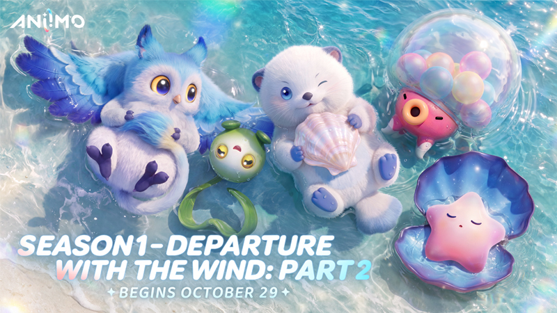
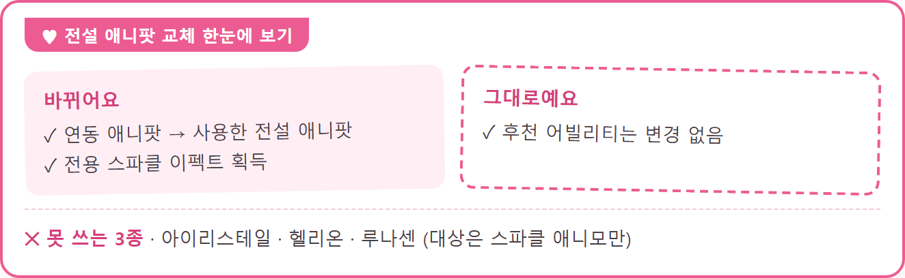

애니모 전설 애니팟 교체, 아이리스테일 헬리온 루나센은 못 써요
스파클 광채 화면에서 전설 애니팟을 쓰면 뭐가 달라지는지, 그리고 누구한테는 못 쓰는지 찾아보시는 분들이 많을 텐데요. 10월 29일 시즌 1 하 「바람 따라 출발·하」 업데이트에서 들어온 기능이라, 11월 2일 현재 공식 공지에 나온 내용만 정리했어요. 전설 애니팟은 스파클 애니모에게만 쓸 수 있고, 쓰면 연동 애니팟이 그 전설 애니팟으로 바뀌면서 전용 스파클 이펙트를 얻지만 후천 어빌리티는 그대로이며, 아이리스테일·헬리온·루나센에게는 쓸 수 없어요. 전설 애니팟 자체를 만드는 쪽은 「애니모 아이리스테일 얻는 법, 전설의 여행 일정부터 꽃잎 미리 모으는 법까지」 글에 정리해뒀어요.

이미지: Steam 애니모 공식 공지 (영문판) · Season 1: Departure with the Wind Part 2 Starts!
시즌 1 하 시작을 알린 공지의 대표 이미지예요. 이번 공지에는 교체 화면 그림이 없어요.
전설 애니팟 교체는 어떤 애니모에게 쓸 수 있나요?
교체는 스파클 애니모에게만 쓸 수 있는데요, 그중 아이리스테일·헬리온·루나센 세 종만 딱 빠져 있어요. 공지에는 스파클 애니모만 대상으로 적혀 있어서 스파클이 아닌 애니모도 대상에서 빠지고요.
| 대상 | 쓸 수 있나요? |
|---|---|
| 스파클 애니모 | 쓸 수 있어요 |
| 아이리스테일 | 못 써요 |
| 헬리온 | 못 써요 |
| 루나센 | 못 써요 |
| 스파클이 아닌 애니모 | 대상이 아니에요 |
영문판에는 세 이름이 Irisalis, Helion, Lunara로 나오니까, 영문판으로 검색하시는 분들은 이 표기로 찾아보시면 돼요.
전설 애니팟으로 교체하면 뭐가 바뀌고 뭐가 그대로인가요?
여기서 연동 애니팟은 그 스파클 애니모에 연결된 애니팟을 말하는데요, 공식 개발자 노트 Vol.1에서는 원래 쓰던 애니팟을 지금의 전설 애니팟으로 교체하면 거기에 맞는 전용 스파클 효과를 얻는다고 안내해요.
| 항목 | 바뀌나요? | 내용 |
|---|---|---|
| 연동 애니팟 | 바뀌어요 | 연동된 애니팟 자리에 사용한 전설 애니팟이 들어가요 |
| 전용 스파클 이펙트 | 새로 얻어요 | 그 전설 애니팟에 대응하는 이펙트가 붙어요 |
| 후천 어빌리티 | 안 바뀌어요 | 교체해도 수치가 그대로예요 |
후천 어빌리티는 애니모를 잡은 뒤 육성으로 올리는 수치를 가리키는 말이에요. 용어가 헷갈리시면 「애니모 용어 총정리」 글에서 같이 보실 수 있고, 키워 둔 수치는 교체 때문에 달라지지 않으니 그 부분은 마음 놓으셔도 돼요.

바뀌는 것과 그대로인 것, 못 쓰는 3종을 한 장에 모은 요약 카드예요.
스파클 광채 화면에서 같이 바뀐 건 뭐예요?
전설 애니팟 사용은 개편된 「스파클 광채」 화면에 같이 들어온 다섯 항목 중 하나인데요, 나머지 4가지는 이래요.
- 화면 개편은 스파클 부여와 광채 변환 같은 기존 기능을 새 「스파클 광채」 화면 한 곳에서 쓰게 해 주는 변화예요
- 광채 해제 및 전환은 특정 광채의 애니모 개체를 포획하면 그 광채가 영구로 열리고(「스파클 광채」 아이템으로 무작위 해제도 돼요), 열린 광채를 미리 보고 크레딧을 써서 같은 애니모의 다른 광채로 바꾸는 기능이에요. 해제는 그 개체에만 걸려서 같은 종의 다른 개체와는 공유되지 않아요
- 광채 변환은 「스파클 광채」 아이템으로 광채를 무작위로 다시 바꾸는 건데요, 이미 해제한 광채가 나오면 「스파클 인장」 2개를 돌려받고 변환 기록은 최근 3개월까지 볼 수 있어요
- 스파클·원형은 스파클 이펙트가 적용된 초기 배색이고, 모든 스파클 애니모가 자동으로 받아요
「스파클 광채」는 화면과 아이템의 이름이고 개체마다 해제되는 광채는 그 안의 종류를 가리켜서, 말이 두 가지로 쓰여 헷갈리기 쉬워요. 이름만 구분해 두면 훨씬 편하죠.
같은 업데이트에는 스파클 애니모를 키우는 분이 눈여겨볼 출석 이벤트 「물결 선물」도 함께 열렸어요.
- 캐릭터가 학생Ⅰ로 승급한 모험가가 참여할 수 있고, 버전 업데이트 직후부터 UTC+8 기준 12월 10일 03:59(한국 시각 04:59)까지 열려 있어요
- 14일 누적 로그인 출석 이벤트라서, 쌓인 로그인 일수가 지정된 기준에 닿으면 선물을 받아요
- 선물 목록에는 「스파클 애니팟」, 「스파클 결정체」, 「스파클 애니모 알」, 「챔피언 애니팟」 등이 들어 있어요
공지에 없어서 아직 모르는 건 뭔가요?
대표적인 건 이런 것들이에요.
- 전용 스파클 이펙트가 어떻게 생겼는지, 몇 종류인지
- 교체에 쓰는 전설 애니팟을 어디서 얻는지, 쓰면 사라지는지
- 이미 바꾼 애니모에 다른 전설 애니팟을 다시 쓸 수 있는지
- 아이리스테일·헬리온·루나센이 대상에서 빠진 이유
확인 위치: 인게임 「스파클 광채」 화면과 인게임 공지, 스팀 공지 목록 · 확인되면 아래에 채워주세요.
| 항목 | 값(확인 후 입력) |
|---|---|
| 전용 스파클 이펙트의 외형·종류 수 | — |
| 교체용 전설 애니팟 입수처·소모 여부 | — |
| 교체한 뒤 재교체 가능 여부 | — |
| 3종이 제외된 이유(공식 설명 없음) | — |
| 「스파클 광채」 화면 진입 경로 | — |
| 전용 이펙트와 기존 스파클 스타일(일반·찬란한·그림자)의 관계 | — |
오늘 뭐부터 확인하면 되나요?
내 스파클 애니모가 어느 쪽인지에 따라 이렇게 갈려요
- 아이리스테일·헬리온·루나센 중 하나라면 전설 애니팟이 있어도 이 기능은 쓸 수 없어요
- 그 밖의 스파클 애니모라면 대상이라서, 육성해 둔 쪽은 건드리지 않고 이펙트만 바꿔 볼 수 있거든요
- 스파클이 아닌 애니모라면 이번 교체와는 인연이 없어요
아끼는 스파클 애니모에 쓰기 전에는 인게임 안내 문구를 한 번 읽어 보시길 추천드려요~ 다들 즐겜하세요!
전설 애니팟 교체 자주 묻는 질문
Q. 이 기능은 언제부터 쓸 수 있나요?
10월 29일 점검이 끝난 뒤 버전 업데이트와 함께 적용돼요. 같은 업데이트의 이벤트 「S1 바람 따라 출발·하」는 UTC+8 기준 12월 10일 07:59(한국 시각으로는 08:59)까지 열려요.
Q. 이미 갖고 있는 스파클 애니모에도 적용할 수 있나요?
네, 공식 개발자 노트 Vol.1에서 같은 질문에 1.1 버전 업데이트 이후 전설 애니팟을 스파클 애니모에 쓸 수 있게 된다고 답했어요. 원래 쓰던 애니팟을 전설 애니팟으로 바꾸면 그 애니팟에 해당하는 전용 스파클 효과를 얻게 되죠.
Q. 전설 애니팟으로 바꾸면 후천 어빌리티도 바뀌나요?
아니요, 육성해 둔 수치는 그대로고 연동 애니팟과 전용 스파클 이펙트만 달라져요.
참고한 곳
· Steam 애니모 공식 공지 (한국어) · 시즌1 「바람 따라 출발·하」 오픈!
· Steam 애니모 공식 공지 (영문판) · Season 1: Departure with the Wind Part 2 Starts!
· Steam 애니모 공식 개발자 노트 Vol.1 (한국어)
✔ 애니모 같이 보기 좋은 내용
· 애니모 환상의 밤 퍼레이드 보상 5종, 10.29~12.9 받는 기간
· 애니모 레벨 60 이후 육성, 돌파는 진화 아이템 카드는 잠재력용
· 애니모 천휘 일루윙 팬텀배트 얻는 법, 동행 수첩·시즌 업적